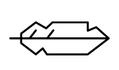
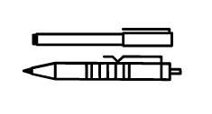
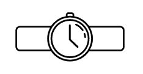

Hate CSS? Does it stop you from building new stuff?
Get started on your next project quickly without worring about writing
CSS.
If you like the color purple , you are in for a treat :) (primary color of the
library)

Lightweight like a feather with ~500 lines of code.

Its a starting point not a Framework. You can add your customizations later :)

Quick to start with zero compiling or installing necessary.